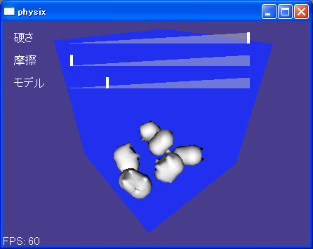
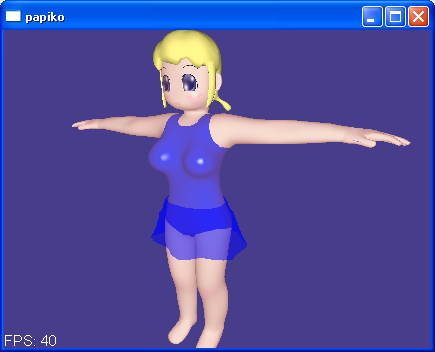
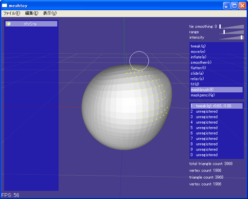

環境について
当方ではWindowsXP、Core2Duo2.4G、GeForce8600GTSの環境で動作を確認しています。VGAはもう少し劣るものでもかまわないはずですが、物理系の作品はCPUに関してはタイトかもしれません。
作品1: ぶたさんたくさん
実行形式:
こちら。右ドラッグで回転できます。
このアプリを作成したのは5年以上前のことなのですが、最近emscripten/WebGLにも移植してみました。chrome、firefoxなどのブラウザでご覧になれます（ロードが長いかも知れません）。これも右ドラッグで回転できます。
説明:
自作SoftBody物理エンジン「partix」のサンプルです。partixはgithubで公開しているフリーのtemplateライブラリです（ただし現状ドキュメントは全くないので、公開していると言ってもファイルをそこに置いてある程度の状態です）
partixは「Meshless Deformations Based on Shape Matching」をベースとした物理エンジンで、物体のやわらかさを表現できることが最大の特徴です。また任意形状を基本としているので、本サンプルでも足から落ちたぶたさんは立ち、背中から落ちたぶたさんは転がる、といったような挙動を示します。
本サンプルでは内部的な変形をトランスフォーム行列で表現可能な範囲でしかモデルに反映していないため、「硬さ」を下げると若干壁をつきぬけたように見えますが、内部的には頂点単位で変形しています。これを表示用頂点に反映することも技術的にはさほど難しくありませんが、頂点バッファへの書き込みと法線計算を必要とするため、パフォーマンスに影響を与えてしまいます。経験上動きさえ柔らかくなっていれば柔らかく見えるので、本サンプルでは行わないことにしています。
Core2Duo2.4GHz(但しシングルスレッド)で5体まで60FPSで動くことを確認しています。partixの動作速度はエンティティの頂点数などによりますので、モデルの数や精度を制限すればこれより性能の低いプラットフォームでも実用的な速度で動作可能です。見た目用のモデルと物理用のモデルは異なるものを利用できるので、精度を必要としない局面ではおおざっぱなモデルを利用することも可能です。本サンプルではほぼ同一のモデルを用いています。
GPGPUによる衝突判定などもテスト済みで、それなりのパフォーマンス(衝突判定部分のみで約2倍程度)を出していますが、プラットフォームの制限が大きすぎるのでC\本サンプルでは適用していません。
同様のものをムービー化したものをニコニコ動画にアップロードしておりますので、お時間があればそちらもご覧ください。そちらでは表示用と物理用に異なるモデルを用いており、物理用に頂点数の少ないモデルを利用しているので、10体まで60FPSで動いています。
partixのドキュメントは未整備ですが、ブログでドキュメント化を進めていました。
最近実装したemscripten/WebGL版を知人にモバイル環境でテストをして頂いたデータもあります。思ったよりも高速で動作するのでemscriptenの性能に驚いておりました。
操作方法:
右ドラッグ: カメラの回転(重力方向も変化)
左クリック: ぶたさんの選択
左ドラッグ(何もないところ): ズーム
左ドラッグ(選択したぶたさん): 引っ張る
ソースの簡単な説明
場所: partix/examples/butabox
アプリ
- butabox.cpp
- メイン
- camera.[hc]pp
- カメラ
- mouse_acceptor,mouse_dispatcher.[hc]pp
- マウス処理用クラス
- dashboard.[hc]pp
- UI(widgetを使役するクラス)
- mqoreader.[hc]pp
- MQO(メタセコイヤのファイル)パーサ
- room.[hc]pp
- 青い箱を描画するクラス
- shape.[hc]pp
- ぶたのモデルを描画するクラス
- stdafx.h, stdafx.cpp
- プリコンパイルヘッダ関係
- texture_locker.hpp
- D3DXテクスチャにアクセスするためのユーティリティ
- timer.hpp
- フレームレート管理
- misc.hpp
- 雑多な関数
- trivial_2d.hpp
- widgetで使用する頂点座標定義
- widget/*.[hc]pp
- UIシステム、各種コントロール
- ../../include/partix/*.hpp
- 物理エンジン
- ../../include/zw/*.hpp
- 自作Win32APIラッパー
作品2: 人体
実行形式:
こちら
説明:
物理エンジン「partix」サンプル＋クロスシミュレーションです。
partixエンジンはいったんエンティティを粒子に解体してシミュレーションを行う方式であるため、クロスシミュレーションともよい相性を持っています。また未挑戦ではありますが、原理上おそらく流体(OctaveEngineのようなアプローチ)との相性もよいと思われます。
表示面では、内部的にサブディヴィジョンを行って、物理エンティティとの継ぎ目の分かりにくい高精度なスキニングを実現しています。
またちょっと分かりにくいとは思いますが、特殊なシェーダ(汎用表引きシェーダ)で柔らかめの肌の色を出したり、スペキュラマップで光沢の出る場所を制御したりもしています。
操作方法:
右ドラッグ: カメラの回転
左ドラッグ(何もないところ): ズーム
左ドラッグ(スカート、体): スカートを引っ張る、胸を触る
Sキー: 物理エンティティの可視化
ソースの簡単な説明
場所: partix/examples/papiko
アプリ
- papiko.cpp
- メイン
- camera.[hc]pp
- カメラ
- mouse_acceptor,mouse_dispatcher.[hc]pp
- マウス処理用クラス
- cloth.[hc]pp
- 服の描画クラス
- finger.[hc]pp
- 指に対応するクラス
- wavefront_obj.hpp
- WAVEFRONT OBJ形式のパーサ
- room.[hc]pp
- 青い箱を描画するクラス
- papishape.[hc]pp
- 人体を描画するクラス
- partix_common.hpp
- partix用の設定ファイル
- stdafx.h, stdafx.cpp
- プリコンパイルヘッダ関係
- texture_locker.hpp
- D3DXテクスチャにアクセスするためのユーティリティ
- timer.hpp
- フレームレート管理
- mathutil.hpp
- 雑多な関数
- trivial_2d.hpp
- widgetで使用する頂点座標定義
- widget/*.[hc]pp
- UIシステム、各種コントロール
- ../../include/partix/*.hpp
- 物理エンジン
- ../../include/zw/*.hpp
- 自作Win32APIラッパー
作品3: ぶたさんレース
ダウンロード:
諸事情により実行ファイルを公開できないため、ムービーをご覧ください。
説明:
自作SoftBody物理エンジン「partix」のサンプルです。
「安定性の低い自機を操ってオフロードレースやアスレチックス的な楽しさを表現する」というコンセプトになっています。
作品4: meshtoy
フリーソフトとして公開していたスカルプトツールですが、需要が小さい、他にもっとよいフリーのスカルプトツールが登場した、メンテに労力を割けなくなった、などの理由で公開をやめました。
とはいえ、やや高度な機能もいつくか実装されています(メッシュリダクション、メッシュサブディヴィジョン、内部でサブディヴィジョンを行ってのメッシュマッチング、など)。
作品5: caper
namespace calc {
enum Token {
token_eof,
token_Add,
token_Div,
token_Mul,
token_Number,
token_Sub,
};
template < class Value, class SemanticAction, int StackSize >
class Parser {
public:
typedef Token token_type;
typedef Value value_type;
public:
Parser( SemanticAction& sa );
void reset();
bool post( token_type token, const value_type& value );
bool accept( value_type& v );
bool error();
};
} // namespace calc
フリーソフトとしてgithubで公開中のパーサジェネレータです。
パーサジェネレータとしては特別高度なアルゴリズムは用いていませんが、出力するコードはかなり再利用性の高いものとなっています。最近内部コードをC++11で書き換えました。
PullRequestをいくつか頂いた結果、C++, Java, JavaScript, D, C#, Boo, Ruby, PHP, Haxe とかなりたくさんの言語でパーサを出力できるようになりました。
caperを使ってC言語のパーサを書かれた方もいらっしゃいます。
自分でも、caperを作ってLLVM IRを出力するtoy compilerを実装したことがあります(caperのレポジトリに含まれていますが、LLVMのバージョンアップに追従していないので現状はビルドができない状態です)。また業務でデータ変換ツールにもよく利用しています。
Appendix: 物理エンジン「partix」のソースについての簡単な説明
- partix.hpp
- ユーザインクルード用ヘッダ
- partix_forward.hpp
- 前方参照
- partix_world.hpp
- 物理世界
- partix_body.hpp
- 物体のインターフェイス
- partix_shell.hpp
- 中空の任意メッシュのインターフェイス
- partix_volume.hpp
- 三角錐を重点した任意メッシュのインターフェイス
- partix_collidable.hpp
- 衝突可能物体のインターフェイス
- partix_plane.hpp
- 具象物体(平面)
- partix_rigid.hpp
- 具象物体(剛体)※ほとんど未実装
- partix_softshell.hpp
- 具象物体(非剛体で中空の任意メッシュ)
- partix_softvolume.hpp
- 具象物体(非剛体で三角錐を充填した任意メッシュ)
- partix_constraint.hpp
- 衝突データ構造
- partix_contact.hpp
- 接触データ構造
- partix_tetrahedral_mesh.hpp
- tetrahedral mesh(softvolumeに用いるデータ)
- partix_geometry.hpp
- 下層データ構造(辺、面、三角錐)
- partix_cloth.hpp
- 具象物体(布)
- partix_block.hpp
- インデックスバッファのようなもの
- partix_cloud.hpp
- バーテックスバッファのようなもの
- partix_point.hpp
- 下層データ構造(点)
- partix_id.hpp
- 物体ID
- partix_math.hpp
- 数学ユーティリティ
- partix_utilities.hpp
- 雑多ユーティリティ
- partix_spatial_hash.hpp
- spatial hash
- partix_rayprocessor.hpp
- RAY-TRIANGLEテストのドライバ
- aabb_tree.hpp
- AABBツリーの実装
- cpu_ray_triangle_tester.hpp
- RAY-TRIANGLEテスト
- fixed_pool.hpp
- 固定長メモリアロケータ
- performance_counter.hpp
- 時間測定用クラス
- voxel_traverser.hpp
- ボクセルトラバース(3D-DDA)